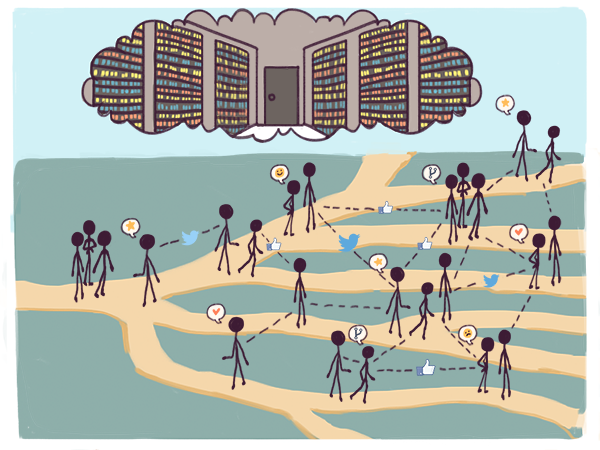

La sérendipité des flux
Un flux est simplement un contexte de vie formé par toutes les informations qui arrivent vers vous par un ensemble de connexions connues – vers les individus, les idées et les ressources libres – via une multiplicité de réseaux. Si dans une organisation traditionnelle rien n’est libre et tout a un rôle défini dans une sorte de projet global, dans un flux tout tend à être libre et gratuit. Les flux « sociaux » permis par la puissance informatique disponible dans le cloud et sur les smartphones ne sont pas des endroits bien délimités et réservés à une activité en particulier. Ils fournissent un environnement riche d’informations et de connexions pour toutes les activités.

Au contraire des organisations définies par des limites claires, les flux sont ce que Acemoglu et Robinson appellent des institutions pluralistes. Elles sont à l’opposé des institutions extractives : ouvertes, inclusives et à même de créer de la valeur par des jeux à somme non nulle.
Sur Facebook, par exemple, on établit des connexions volontairement (et ça n’a rien à voir avec les relations qu’on dessine sur un organigramme), les photos et les informations sont généralement partagées librement (au contraire de photos conservées dans des archives de journaux), sans restriction majeure sur les futurs partages. La plupart des fonctionnalités de cette plateforme sont gratuites. Ce qui est moins évident à comprendre est qu’elles sont également libres. Excepté dans quelques cas extrêmes, Facebook n’essaye pas d’imposer quels types de groupes on est en droit de créer sur sa plateforme.
Si les trois choses les plus recherchées dans un monde défini par les organisations sont la localisation, la localisation et la localisation1, dans un monde en réseau ce sont les connexions, les connexions et les connexions.
Les flux ne sont pas une nouveauté dans l’histoire de l’humanité. Avant que la Route de la soie ne soit un site du Darknet2, c’était un flux d’échanges qui reliait l’Europe, l’Afrique et l’Asie. Avant les non-conformistes, bidouilleurs et hackers, il existait aux premières heures de l’époque moderne des rétameurs itinérants. Les environnements d’inventions collectives que nous avons présentés dans le chapitre précédent tels que le district minier de Cornouailles au temps de James Watt ou la Silicon Valley d’aujourd’hui sont parmi les premiers exemples de flux, à petite échelle. Les grandes artères des grandes villes riches sont également des flux, dans lesquels on peut tomber par hasard sur des amis, prendre connaissance de prochains événements en lisant une affiche ou découvrir de nouveaux bars ou restaurants.
Ce qui est nouveau, c’est l’idée d’un flux numérique créé par le logiciel. Alors que la géographie régente les flux physiques, les flux numériques peuvent régenter la géographie. Accéder au flux d’innovation que constitue la Silicon Valley est limité par des facteurs géographiques comme le coût de la vie ou les barrières douanières. Ce n’est pas le cas du flux d’innovation que constitue GitHub. Sur une grande artère bondée, on ne peut rencontrer que les amis qui sont également de sortie ce soir-là, mais en utilisant des lunettes de réalité virtuelle, on pourrait également « rencontrer » des amis de partout dans le monde et partager avec eux des ressentis physiques.
Ce qui fait des flux un environnement idéal pour l’innovation ouverte permise par le bricolage, c’est qu’ils permettent en permanence à des idées, à des ressources et à des personnes qui ne se connaissent pas de se rencontrer et de se rassembler au hasard. Cela est possible parce que les flux se constituent aux points d’intersection de réseaux multiples. Sur Facebook ou même dans votre boite email, vous pouvez recevoir à la fois des nouvelles de vos amis et de vos collègues. On peut également recevoir des informations de réseaux sans liens les uns avec les autres tels que Twitter ou un fil RSS d’un site d’information. Cela signifie que dans un flux, une nouvelle information arrive dans un environnement de lecture fait de contextes différents et non concurrents qui se chevauchent les uns les autres sans pour autant avoir le moindre objectif commun. Parallèlement, vos propres actions se déroulent aux yeux des autres, chacun les voyant dans son propre environnement.
De telles juxtapositions inattendues permettent de « résoudre » des problèmes dont on ne pensait pas qu’ils existaient. Cela permet également de faire des choses dont personne ne pensait qu’elles en valaient la peine. Voir un ancien condisciple et un collègue dans le même flux peut, par exemple, vous permettre de réaliser que les faire se rencontrer serait une bonne chose : c’est un petit bricolage social. Parce que vous êtes vu par beaucoup d’autres avec des points de vue différent, vous pouvez trouver des gens qui résolvent vos problèmes sans aucun effort de votre part. C’est une chose très courante sur Twitter : un contact virtuel qui tweete une information absconse mais cruciale pour vous et qui autrement vous aurait échappée.
Quand un flux se renforce grâce à ce genre de comportements, chaque réseau participant est également renforcé.
Twitter et Facebook sont les deux plus grands flux numériques généralistes aujourd’hui mais il en existe des milliers d’autres sur internet. Des flux spécialisés, comme GitHub et Stack Overflow, s’adressent à des communautés spécifiques3, mais sont ouverts à tous ceux qui cherchent à apprendre. Des flux plus récents, comme Instagram et WhatsApp, s’inspirent du mode de vie des plus jeunes. Reddit s’est imposé comme un endroit inhabituel pour se tenir au courant des avancées scientifiques en permettant de dialoguer avec de vrais chercheurs en activité. Tous les développeurs qui utilisent les méthodes agiles pour leurs applications en beta perpétuelle passent leur temps dans un flux d’usages inattendus découvert par un bidouilleur. Slack transforme en flux la vie interne d’une entreprise.
Les flux ne se limitent pas aux êtres humains. Il y a déjà sur Twitter beaucoup de robots intéressants qui vont de House of Coates (un compte qui est mis à jour par une maison intelligente) à des sondes spatiales et même des requins que des chercheurs ont équipés de transmetteurs4. Il y a sur Facebook des pages qui permettent de suivre ou de liker des livres et des films.
Au contraire, installé dans un bureau traditionnel à utiliser un ordinateur configuré uniquement pour le travail par un service informatique, on ne reçoit d’informations que d’un seul contexte et tout se déroule dans un environnement exclusivement professionnel. Les outils auront beau être à la pointe du progrès, l’architecture de l’information ne sera finalement pas très différente de ce qui se faisait au temps du tout papier. Si jamais une information émanant d’un contexte différent se glisse dans ce contexte, on pense que c’est la preuve d’une faille dans le système d’information : de quoi justifier des sanctions disciplinaires, dans la plus pure tradition du travail à l’ancienne. Les relations que l’on tisse avec d’autres personnes sont prédéterminées par les organigrammes. Si jamais on entretient des relations extra-professionnelles avec un collègue (membres de la même équipe et partenaires de tennis, par exemple), cela finit par affaiblir l’autorité de l’organisation. Il en va de même des ressources et des idées. Chaque ressource est affectée à une fonction « officielle » déterminée et chaque idée est considérée d’un seul point de vue, arrêté par défaut et ne faisant l’objet que d’une interprétation « officielle » : la « politique » ou la « ligne officielle » de l’organisation.
Cela engendre une conséquence fondamentale. Quand les organisations fonctionnent bien et qu’il n’y a pas de flux, on voit la réalité dans ce que les psychologues du comportement appellent la fixité fonctionnelle5 : les gens, les idées et les choses ont des sens uniques et définitifs, ce qui les rend moins capables de résoudre de nouveaux problèmes de façon créative. Dans une dystopie sans flux, les endroits les plus recherchés sont les sanctuaires les plus reculés : typiquement les organisations les plus anciennes et les plus éloignées de la modernité. Mais ce sont également des lieux où se trouve la plus grande richesse et qui offrent la plus grande liberté à leurs occupants. En Chine, par exemple, les bureaux les plus obscurs du parti communiste restent encore le meilleur endroit qui soit. Dans une entreprise du CAC 40, la meilleure place reste encore l’étage de la direction générale.
Au contraire, quand les flux fonctionnent efficacement, la réalité finit par devenir ce que Ted Nelson appelle un enchevêtrement entrelacé6. Les gens, les idées et les choses peuvent prendre des sens multiples et changeants au gré de l’environnement où ils évoluent. Les possibilités créatives se développent rapidement, au fur et à mesure qu’un nouveau réseau vient alimenter le flux. L’endroit le plus intéressant est alors le front de l’actualité et plus les sanctuaires reculés. Aux Etats-Unis, être un jeune talentueux dans la Silicon Valley peut être certainement plus intéressant et plus valorisant qu’être haut placé à la Maison-Blanche. La start-up à la croissance la plus rapide de toutes peut apporter à son fondateur plus d’influence que le président des Etats-Unis ne pourrait en avoir.
La différence entre les deux contextes se comprend d’elle-même. Dans une organisation, le moindre conflit se transforme en problème ou en frein, et on y réagit en cherchant à le résoudre toujours mieux. Dans un flux, quand les choses deviennent trop homogènes et trop consensuelles, chacun se plaint et trouve cela ennuyeux ou sans surprise, si bien que tout finit par sonner creux. On y réagit en cherchant à ouvrir les horizons afin de faire advenir des choses surprenantes.
Ce qui ne va pas de soi, c’est que les flux sont des moteurs de résolution de problèmes et de création de richesses. On considère les flux comme des zones de jeu et d’amusement parce qu’on les regarde au travers du prisme du monde géographique qui, tout dualiste qu’il est, ne considère pas qu’un jeu puisse également constituer un travail.
Dans notre conte des deux ordinateurs, le monde connecté finira par s’imposer durablement comme ordinateur planétaire quand cette idée deviendra naturelle et qu’il ne sera plus possible de distinguer le jeu du travail.
[1] Un slogan de l’immobilier qui semble remonter au moins aux années 1920. Voir « Location, Location, location » par William Safire, The New York Times Magazine, 26 juin 2009.
[2] Les darknets sont des réseaux (souvent de pairs à pairs) qui se superposent à Internet. Un des plus connus est Tor qui est notamment devenu célèbre pour ses places de marché où tout peut être acheté, de la drogue au chasseur de prime. Le service le plus célèbre s’appelait justement Silk Road – fermé par le FBI en novembre 2014 (ndt).
[3] En l’espèce, les développeurs informatiques. GitHub permet de partager des codes sources et de gérer des développements collaboratifs et Stack Overflow est un service de questions-réponses autour de problématiques informa- tiques (ndt).
[4] En Australie, plus de trois cents requins sont maintenant équipés de transmetteurs, NPR 2012. Voir cette page : http://www.npr.org/sections/alltechconsidered/2013/12/31/258670211/more-than-300-sharks-in-australia-are-now-on-twitter.
[5] La fixité fonctionnelle est un biais cognitif qui fait que les gens finissent par ne plus voir que les fonctions les plus évidentes des objets. Voir le problème de la bougie : https://fr.wikipedia.org/wiki/Problème_de_la_bougie.
[6] Ici, l’auteur cite un néologisme proposé par Ted Nelson (l’inventeur des concepts d’hypertexte et d’hypermédia) : intertwingled qui est la concaténation de intertwined (litt. entrelacé) et de tangled (litt. emmêlé) et que nous rendons par l’expression « enchevêtrement entrelacé ». Ce terme est censé conceptualiser les interrelations qui se tissent au fil du temps dans une organisation à l’ère de l’information. Pour résumer le sens de cette expression, on pourra penser au bon mot de Francis Blanche : tout est dans tout et inversement. Le nœud gordien évoque également ce concept (ndt).